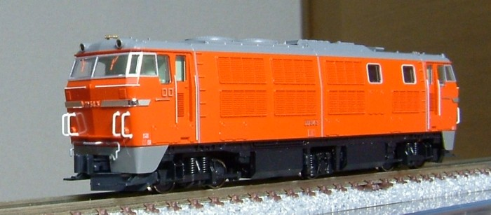
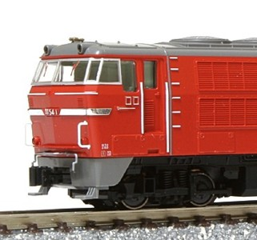
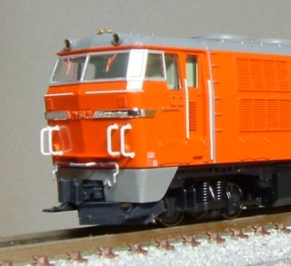
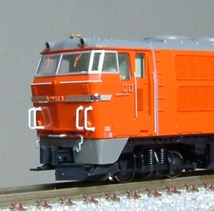

DD54 初期型

DD54 初期型です。
KATOから発売された初期型お召機の晴れ姿から化粧落としして、普段働いている姿にしました。
間違い探しです。



オリジナル(製品)
2号機
お召し機にはなっていないため、通常の塗装です。
区名票さしも朱色。
3号機
元お召し機です。
はしごは朱色になったようですが、区名票さしは
最後までステンレス磨き上げが残っていたようです。
加工点です。買ってきて1ミリも走らず、お召仕様ではなくなりました。
銀色にメッキ処理されされている区名票さしを、朱色4号に塗装
白色に色入れされているはしごを、朱色4号に塗装
カプラー・スノープローをブルトレ牽引機のものに交換。パーツがあっさりつきます。
前面に手すりを追加
2号機のナンバーを合成
晩年の改造としては、更にSG室のエアフィルタが埋められ、
煙道がY字型のものに改造されたようですがこれはやってません。かっこ悪いですし。
車輪の輪心もほんとうはリブ付きの量産車とは異なるもの(DD20と同じやつ)なのですが、
こちらはやりたいものの改造する方法が思いつかず。
欠番になっている7010-2で何が出るかはほぼ確定なので、発表がとにかく楽しみです。
トップへ戻る